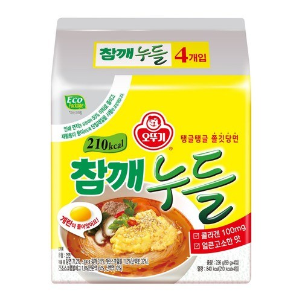

오뚜기 참깨누들
오뚜기 참깨누들 — 고소한 참깨 소스 면.
오뚜기 참깨누들은 참깨 소스를 비벼 먹는 라면입니다. 매운 라면보다 덜 맵고 고소해서, 매운 음식을 부담스러워하는 여행객 선물로도 무난합니다.
물을 버리고 소스를 비비는 타입이 많습니다. 액상 소스는 캐리어에서 새지 않게 지퍼백에 넣으세요.
오뚜기 참깨누들은 참깨 소스를 비벼 먹는 라면입니다. 매운 라면보다 덜 맵고 고소해서, 매운 음식을 부담스러워하는 여행객 선물로도 무난합니다.
물을 버리고 소스를 비비는 타입이 많습니다. 액상 소스는 캐리어에서 새지 않게 지퍼백에 넣으세요.
사는 팁
구매 팁 대형마트 라면 코너·온라인 묶음이 찾기 쉽습니다.